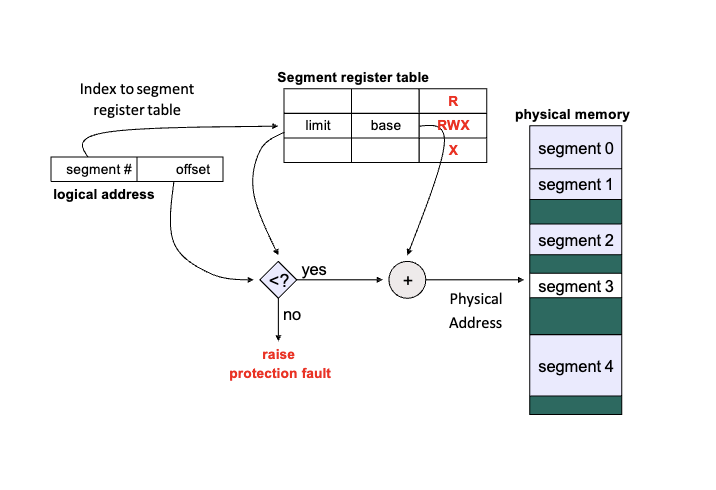

Main Memory¶
约 2642 个字 预计阅读时间 9 分钟
Program must be brought into memory and placed within a process for it to be run.
Partition Evolution¶
Partition requirements
- Protection: keep processes from smahsing each other. (进程之间不会互相闯入对方的存储)
- Fast execution: memory accesses can't be slowed by protection mechanisms
- Fast context switch: cannot take forever to setup mapping of addresses.
当进程进入系统，操作系统根据各个进程的内存需要以及当前的空闲内存空间来决定为哪些进程分配内存。当一个进程被分配到了空间，它就被载入内存中，并与其它进程竞争 CPU 时间。
当进程运行起来后，我们不能把它的内存整体往后挪。因为如果要挪的话要把所有指针往后挪，这样代价很大。
但是考虑下述图片所示的情形：内存中碎片化很严重。系统有很多内存但是我们都用不了。
Solution: 逻辑地址！
- translated into physical address at runtime.
- Define logical address as the offset within the partition.
- E.g., when program utters
0x00346 - Machine accesses
0x14346instead.
- E.g., when program utters
- 我们可以自定义逻辑地址的形式。
Protection¶
- Base and Limit registers
每一个进程在内存中都应当有一块连续的内存空间，而单个进程应当只能访问自己的内存空间，这就是内存保护的基本要求。
我们引入 base 和 limit 两个寄存器来实现框定进程的内存空间。当前进程的内存空间始于 base 寄存器中存储的地址，终于 base+limit 对应的地址。这两个寄存器只能由内核通过特定的特权指令来修改。内存管理单元 （MMU）会在每次访问内存时检查访问的地址是否在 base 和 limit 寄存器所定义的范围内，如果不在，会产生一个异常终端程序的执行。
每个进程有自己的 base 和 limit 寄存器，每次进程切换的时候 OS 都会将 base 和 limit 寄存器的值更新为当前进程 base 和 limit 的值.
- Hardware Address Protecion
- CPU must check every memory access generated in user mode to be sure it is between base and limit for that user.
- The instructions must be priviledge.
- Advantage
- Built-in protection provided by limit register.
- Fast execution: addition and limit check at hardware speeds within each instruction. (放到硬件里做，不会影响速度)
- Fast context switch
- No relocation of program addresses at load time
- Partition can be suspended and moved at any time
- Process is unaware of change(修改 base 即可移动进程，进程意识不到)
- Expensive for larger processes(移动进程需要改 base, 还要把旧的东西移到新位置，很耗时间)
Memory Allocation Strategies¶
Fixed partitions¶
divide memory into equal sized pieces
- Degree of multiprogramming = number of partitions
- Simple policy to implement
- All processes must fit into partition space. (如果一个进程比 partition 大就 divide)
- Find any free partition and load process
但是一个问题就是 size 大小的问题，如果太小可能有大进程不能 load 进来，如果太大可能有 internal fragmentation.(unused memory within partition, it is a big waste of memory.)
Variable partions¶
-
Memory is dynamically divided into partitions based on process needs.
-
How to satisfy a request of size n from a list of free memory blocks?
- first-fit: allocate from the first block that is big enough
- best-fit: allocate from the smallest block that is big enough
- worst-fit: allocate from the largest hole
-
Problem: external fragmentation (Unused memory between partitions too small to be used by any processes)
- total amount of free memory space is larger than a request.
- the request cannot be fulfilled because the free memory is not contiguous.
- External fragmentation can be reduced by compaction
- shuffle memory contents to place all free memory in one large block.
- program needs to be relocatable at runtime
- performance overhead, timing to do this operation.
Segmentation¶
我们认为 ELF 中的 text,data,stack 等是多个区域，每个区域可以用一个 Partition 来代表它。即一个程序是由一组 segment 组成的，每个 segment 都有其名称和长度，我们只需要知道 segment 在物理内存中的 base 和段内偏移地址 offset 就可以找到对应的物理地址了。
Logical address consists of a pair:
<segement-number, offset>, segement-number 表示属于第几组, offset is the address offset within the segment.- Segment table where each entry has:
- Base: starting physical address
- Limit: length of segment.
根据 segment-number 在 table 里找到对应的 base 和 limit, 将 offset 和 limit 对比后如果没超出 limit, 将 offset 加上 base 就得到了 physical address.

segmentation 将一个程序分成数个部分，但是其内存分配策略本质上与 partition 是一样的。因此仍然会存在 external fragmetation 的问题。 external fragmentation 的核心在于不连续。因此我们可以将内存重排使得 holes 连在一起，或者设计方案让程序不再需要连续的地址。
重排很耗时，所以我们考虑第二种方案。事实上，segmentation 就是在这方向上的一个尝试。它将程序分成了几块，相比于 partition 减小了 external fragmentation. 为了更好解决问题，我们引入 paging 的概念。
Address Binding¶
内存分为三种：
- 符号地址(symbolic addresses)
- 可重定位地址(relocatable addresses)
- 绝对地址(absolute addresses)
静态代码程序转化成动态的进程的步骤：
- source code addresses are usually symbolic (e,g., variable name)
- compile time: compiler 将代码中的 symbol 转为 relocatable addresses(e.g., 14 bytes from beginning of this module)
- load time: relocatable addresses 转化为 absolute addresses
- execution time: 如果进程在 execution time 时，允许被移动，那么可能从 relocatable addresses 转为 absolute addresses 这一步就需要延迟到 execution time 来执行
Logical vs. Physical address¶
- logical address: generated by the CPU; also referred to as virtual address.
- CPU 看不到物理地址，只用逻辑地址，需要经过特定的部件将逻辑地址转化为物理地址。
- Physical address: address seen by the memory unit
Logical address space: the set of all addresses generated by a program. Physical address space likewise.
Memmory-Managment Unit(MMU)¶
Hardware device that at run time maps logical to physical address. (在 CPU 和内存之间进行地址的翻译)
Paging¶
Contiguous -> Noncontiguous
想要解决的问题是：系统必须使用连续内存的限制。需要使用连续内存是需要一种逻辑上的连续，因此在物理地址和虚拟地址的语境下，我们只需要保证虚拟地址是连续的即可。
Basic idea¶
过于稀碎的物理地址会导致内存访问缓慢！
- 帧 & 页
- 我们将物理内存划分为固定大小的块，称为帧(frames)，每个帧对应虚拟地址中等大的一块页 (pages)
- frame's size is power of 2, usually 4KB
- 用帧来作为连续的虚拟地址的物理基础，用虚拟的页号来支持连续虚拟地址。
- 难点：keep track of all free frames(要追踪 page 和 fram 的映射)
- To run a program of size N pages, need to find N free frames and load program.
- 帧与页的对应关系是通过页表来实现的。
- 我们将物理内存划分为固定大小的块，称为帧(frames)，每个帧对应虚拟地址中等大的一块页 (pages)
- has no external fragmentation, but internal fragmentatioin
- 一般只有最后的区域会有 fragmentation.(前面的都填满了)
- 页如果小，碎片比较少，但是映射更多，页表需要更大的空间；页如果大，碎片多，页表较小。现在页逐渐变大(内存变得 cheap)
- 每个进程都应当有自己的页表，我们称页表是 per-process data structures.
Page Table¶
Store the logical page to physical fram mapping.
- Frame Table: which frame is free and how many frames have been allocated.(标记哪些 frame 空闲)
页表里存的是帧号，不存页号。页号就是访问 page table 里面的 index.
Address Translation¶
A logical address is divied into:
- page number(p)
- used as an index into a page table
- page table entry contains the corresponding physical frame number.
- page offset(d)
- offset within the page/frame
- combined with fram number to get the physical address.
首先把 p 拿出来，从 page table 里读出物理帧号，随后和 d 拼接起来就得到了物理地址。
Paging Hardware¶
早期的想法是每一个页用一组寄存器实现，虽然速度很快，但是寄存器数量有限，无法存储多的页表。
所以页表应该被放到内存中（为了保证效率，我们放在主存里）。我们通过用寄存器维护一个指向页表的指针来维护页表。这个寄存器被称为页表基址寄存器(page-table base register PTBR),当进程不处于 RUNNING 态时，PTBR 应当被存储在 PCB 中，在 context switch 的过程中我们也对 PTBR 进行交换。以及我们还有一个 page-table length register(PTLR), which indicates the size of the page table.
但是这样每次数据/指令访问需要两次内存访问，第一次把页表读出来去查询帧号得到物理地址，再去内存里查询。
- TLB(translation look-aside buffer) caches the address translation
- if page number is in the TLB, no need to access the page table.
- if page number is not in the TLB, need to replace one TLB entry.
- TLB usually use a fast-lookup hardware cache called associative memory
- associative memory: memory that supprots parallel search
- TLB is usually small, 64 to 1024 entries. (TLB 数量有限，为了覆盖更大的区域，我们希望把页变得更大(page size))
页号和帧号以键值对的形式存储在 TLB 中，TLB 也允许并行地查询所有键值对。 每一个进程有自己的页表，所以我们 context switch 时要切换页表，要把 TLB 清空，否则下一个进程就会访问到上一个进程的页表。
Memory Protection¶
我们可以以页为粒度放上一些权限(可读、可写、可执行)用来实现内存保护。
- Each page table entry has a present(valid) bit.
- present: the page has a valid physical frame, thus can be accessed.
- Each page table entry contains some protection bits
- Any violations of memory protection result in a trap to the kernel.
- XN: protecting code
- PXN: privileged execute never
Page Sharing¶
虚拟地址与物理地址的映射并不需要是单射，即多个 page 可以对应同一个 frame。
Paging allows to share memory between processes
- shared memory can be used for inter-process communication
- shared libraries
Structure of Page Table¶
Page table must be physically contiguous. (因为只有一个 BASE 指针指向它，而且硬件没有虚拟地址的概念，这样硬件才能去跑)
如果只有一级的页表，那么页表所占用的内存很大，因此我们需要压缩页表：
- break up the logical address space into multiple-level of page tables
- first-level page table contains the frame for second-level page tables.
Two-Level Paging¶
A logical address is divided into:
- a page directory number(first level page table)
- a page table number(2nd level page table)
- a page offset
Hashed Page Tables¶
哈希页表维护了一张哈希表，以页号的哈希为索引，维护了一个链表，每一个链表项包含页号、帧号和链表 next 指针，以此来实现页号到帧号的映射。
Inverted Page Tables¶
索引 physical address 而非 logical address, 整个系统只有一个页表，每个物理内存的 frame 只有一条相应的条目。寻址时，CPU 遍历页表，找到对应的 pid 和 page number, 其在页表中所处的位置即为 frame number.
但这样每次都需要遍历整个页表，效率很低，而且不能实现共享内存。
创建日期: 2024年11月5日 15:46:22